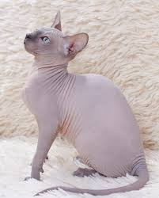

The sphynx cat is an almost hairless breed with a very outgoing personality. They have decently large ears and many visible wrinkles. They also have lemon shaped eyes and very thick paw pads. They are intelligent and curious and won't negate vocalizing when they are in the need of something. They love attention and are attracted to heat and warmth due to their lack of fur.
